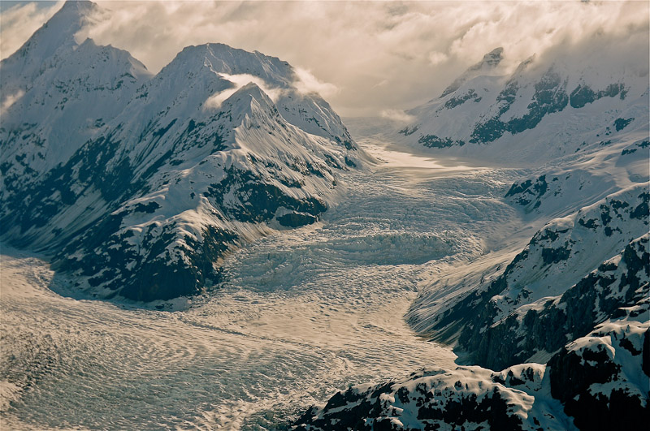

From the results of an annual Alaskan betting contest to sightings of migratory birds, ecologists are using a wealth of unusual data to predict the impact of climate change.
A Tim Sparks slides a small leather-bound notebook out of an envelope. The book's yellowing pages contain bee-keeping notes made between 1941 and 1969 by the late Walter Coates of Kilworth, Leicestershire. He adds it to his growing pile of local journals, birdwatchers' lists and gardening diaries. "We're uncovering about one major new record each month," he says, "I still get surprised." Around two centuries before Coates, Robert Marsham, a landowner from Norfolk in the east of England, began recording the life cycles of plants and animals on his estate - when the first wood anemones flowered, the dates on which the oaks burst into leaf and the rooks began nesting. Successive Marshams continued compiling these notes for 211 years.
B Today, such records are being put to uses that their authors could not possibly have expected. These data sets, and others like them, are proving invaluable to ecologists interested in the timing of biological events, or phenology. By combining the records with climate data, researchers can reveal how, for example, changes in temperature affect the arrival of spring, allowing ecologists to make improved predictions about the impact of climate change. A small band of researchers is combing through hundreds of years of records taken by thousands of amateur naturalists. And more systematic projects have also started up, producing an overwhelming response. "The amount of interest is almost frightening," says Sparks, a climate researcher at the Centre for Ecology and Hydrology in Monks Wood, Cambridgeshire.
C Sparks first became aware of the army of "closet phenologists”, as he describes them, when a retiring colleague gave him the Marsham records. He now spends much of his time following leads from one historical data set to another. As news of his quest spreads, people tip him off to other historical records, and more amateur phenologists come out of their closets. The British devotion to recording and collecting makes his job easier - one man from Kent sent him 30 years' worth of kitchen calendars, on which he had noted the date that his neighbour's magnolia tree flowered.
D Other researchers have unearthed data from equally odd sources. Rafe Sagarin, an ecologist at Stanford University in California, recently studied records of a betting contest in which participants attempt to guess the exact time at which a specially erected wooden tripod will fall through the surface of a thawing river. The competition has taken place annually on the Tenana River in Alaska since 1917, and analysis of the results showed that the thaw now arrives five days earlier than it did when the contest began.
E Overall, such records have helped to show that, compared with 20 years ago, a raft of natural events now occur earlier across much of the northern hemisphere, from the opening of leaves to the return of birds from migration and the emergence of butterflies from hibernation. The data can also hint at how nature will change in the future. Together with models of climate change, amateurs' records could help guide conservation. Terry Root, an ecologist at the University of Michigan in Ann Arbor, has collected birdwatchers' counts of wildfowl taken between 1955 and 1996 on seasonal ponds in the American Midwest and combined them with climate data and models of future warming. Her analysis shows that the increased droughts that the models predict could halve the breeding populations at the ponds. "The number of waterfowl in North America will most probably drop significantly with global warming," she says.
F But not all professionals are happy to use amateur data. "A lot of scientists won't touch them, they say they're too full of problems," says Root. Because different observers can have different ideas of what constitutes, for example, an open snowdrop. "The biggest concern with ad hoc observations is how carefully and systematically they were taken," says Mark Schwartz of the University of Wisconsin, Milwaukee, who studies the interactions between plants and climate. "We need to know pretty precisely what a person's been observing - if they just say 'I noted when the leaves came out', it might not be that useful." Measuring the onset of autumn can be particularly problematic because deciding when leaves change colour is a more subjective process than noting when they appear.
G Overall, most phenologists are positive about the contribution that amateurs can make. "They get at the raw power of science: careful observation of the natural world," says Sagarin. But the professionals also acknowledge the need for careful quality control. Root, for example, tries to gauge the quality of an amateur archive by interviewing its collector. "You always have to worry - things as trivial as vacations can affect measurement. I disregard a lot of records because they're not rigorous enough," she says. Others suggest that the right statistics can iron out some of the problems with amateur data. Together with colleagues at Wageningen University in the Netherlands, environmental scientist Arnold van Vliet is developing statistical techniques to account for the uncertainty in amateur phenological data. With the enthusiasm of amateur phenologists evident from past records, professional researchers are now trying to create standardised recording schemes for future efforts. They hope that well-designed studies will generate a volume of observations large enough to drown out the idiosyncrasies of individual recorders. The data are cheap to collect, and can provide breadth in space, time and range of species. "It's very difficult to collect data on a large geographical scale without enlisting an army of observers," says Root.
H Phenology also helps to drive home messages about climate change. "Because the public understand these records, they accept
them," says Sparks.
It can also illustrate potentially unpleasant consequences, he
adds, such as the finding that more rat infestations are reported to local councils in warmer years. And
getting people involved is great for public relations. "People are
thrilled to think that the data they've been collecting as a hobby can be used for something
scientific - it empowers them," says Root.